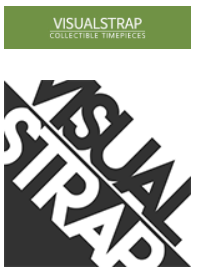
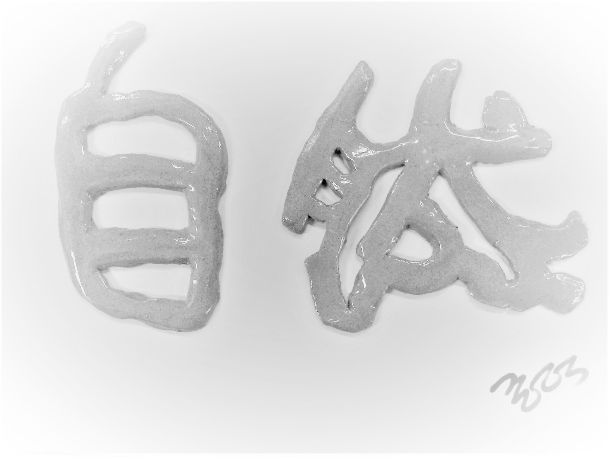

시계테마변동 현황
영화배우 대니얼 크레이그가 손목에 찬 그 시계가 등장하고 필로나투가 30년만에 시계를 다시 차게 되면서 세계의 시계패션은 크게 변했다. 그런 변동을 일찍 감지한 비주얼스트랩에서는 지나온 10년동안 새로운 세계시장 확장에 선두를 나서고 있다
수달의 책읽기
수달의 책읽기 근황과 함께 수달이 그동안 주목해오던 페이스북의 과학읽는사람들의 변화를 살펴본다.
수달 번역의 <뇌복제와 인공지능의 시대>가 출간되자마자 대한민국학술원 우수도서로 선정되는 쾌거를 이루엇는데, 뒤이어 2판이 출간되어 도서시장에 더 큰 화제와 물결을 일으키고 잇다.
지원의 프로그램코딩의 발전
최근 지원 프로그램은 기존의 다층 레이어로 조직된 블랙박스 모델을 탈피하여 투명한 논리구조로 놀라운 결과를 생산하는 획기적인 알고리즘을 개발중이라고 한다. 이에 대한 정보를 비공개로 해달라는 공식적인 요청을 받았기에 여기 홈뉴스레터에서만 대략만 언급하는 것으로 한다.
필로나투 에세이
인문학,
어른들의 이야기
(본문 중간)‘나’의 인생 안에는 이 두 가지 삶의 흔적이 상존하고 있다. 첫째 이야기처럼 남에게 인정받고 싶은 인정 욕구는 나이와 무관하게 나를 강하게 압박한다. 끊임없이 남으로부터 인정받고 싶은 욕구에서 자유로워져야 한다는 것은 이론적으로 잘 아는데, 실상은 인정 욕구에서 벗어나기가 쉽지 않다. 둘째 이야기처럼 나 역시 나이 들어 제풀에 죽지 않고 젊게 살아보려고 애쓰지만 남들은 나의 노력을 거들떠보지도 않는 것이 현실이다. 남들이 나이 든 나를 쳐다보는 편견과 선입관을 뭐라 탓할 수도 없다. 왜냐하면 나도 젊었을 때 노인에 대한 선입관을 가지고 있었기 때문이다.
(본문 중간) 태어나면서 엄마 품을 찾는 순간부터 외로운 어린 시절을 거쳐 친구와 애인을 갈애하며 질풍노도가 몰아치는 청년의 고독 전쟁 시절을 넘어서 왕성한 사회 활동에 외로움조차 들어설 자리가 없어 보이는 중년에게도 내면의 외로움이 엄습하는데, 임종 직전까지도 외로워하면서 세상을 마감한다.  외로움과 함께해 정면으로 받아들이는 일은 나이를 먹는다고 자동적으로 되는 것이 아니고 항상 연습해야 가능해진다. 이를 연습하는 매뉴얼이 바로 인문학 공부다.
(본문 마무리)파격적 변혁의 미래가 새로운 정상 사회가 될 것이라는 사실은 단순한 미래 예측이 아니라 불과 6~7년 안에 우리 모두를 압도할 수준의 현실로 다가올 것이다. 오늘의 코로나19 상황은 예측 불가의 비정상 상황이지만 외로움의 사회적 관점에서는 파괴적 변혁으로 변모된 정상 사회의 초입을 보여주는 예고편이다. 파괴적 변혁의 정도는 너무 강력하고 급속해서 비정상적 정상 사회를 따라가기에는 어른이나 청년이나 다 같이 힘들다. 문제는 물리적 나이가 아니라 인문학적 공부와 삶의 행동이 준비되어 있느냐다. <끝>